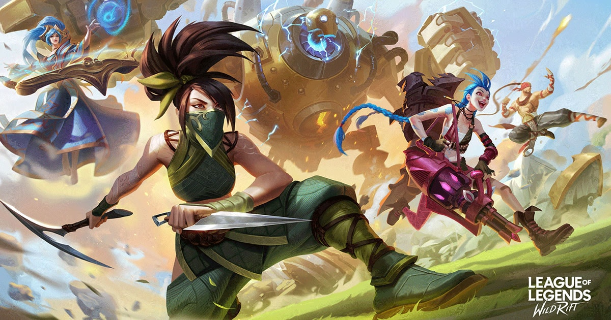

League of Legends Wild Rift
โดยก่อนหน้านี้มีภาพหลุดออกมาให้เราได้ดูกันเรื่อย ๆ ในชื่อเรียกว่า LoL Mobile ซึ่งมีออกมาหลายต่อหลายครั้งเป็นอย่างมาก ถ้าอธิบายให้เข้าใจง่าย ๆ LoL Wild Rift คือ League of Legends หรือ LoL เกม Moba อันดับ 1 ในโลก แต่เป็นเวอร์ชันมือถือและ Console แทน
แต่เดิมเกม LoL นั้นเป็นเกม Moba ที่อยู่ใน PC อย่างเดียว แต่ด้วยความที่อุตสาหกรรมเกมพัฒนาไปเรื่อย ๆ มือถือเลยมีความสำคัญมากขึ้นจนกลายเป็นส่วนแบ่งตลาดขนาดใหญ่ในอุตสาหกรรมเกมไปแล้ว
ด้วยเหตุนี้ทาง Riot Games ผู้สร้าง LoL เลยตัดสินใจนำเกม LoL มาปรับเพื่อให้สามารถเล่นในมือถือได้นั่นเอง
จุดที่น่าสนใจคือ ทาง Riot Games บอกว่าไม่ได้นำเอา LoL จากบน PC มายัดไว้ในมือถือเฉย ๆ แต่พวกเขา ‘สร้างเกม LoL’ ขึ้นมาใหม่จาก 0 เลย ทำให้มีหลาย ๆ ส่วนใน LoL Wild Rift แตกต่างจาก LoL PC เช่นท่าทางการเดิน และสกิลของตัวละครซึ่งจากตัวอย่างเราก็เห็นกันแล้วว่ามีบางอย่างเปลี่ยนแปลงไปจริง ๆ